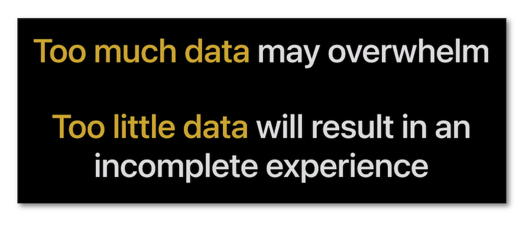
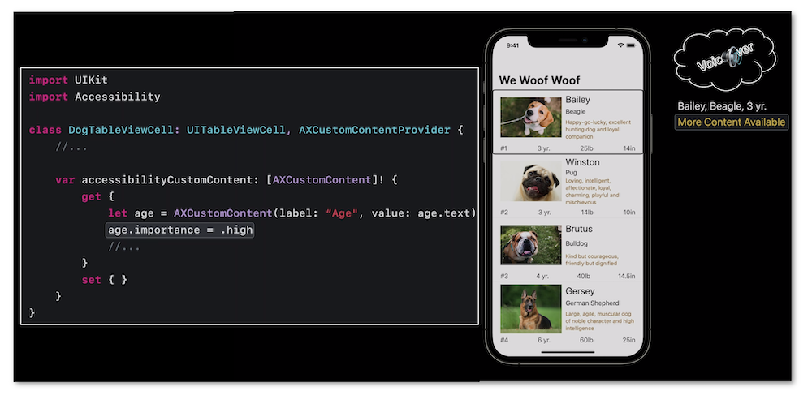

WWDC 2021 : Optimiser VoiceOver dans un contexte riche en données
Cette présentation visualisable sur le site développeur officiel d'Apple (session 121) explique comment présenter un ensemble complexe de données avec VoiceOver en utilisant la fonctionnalité fournisseur de contenu personnalisé disponible depuis iOS 14.

Les thèmes abordés ainsi que leur référence temporelle au sein de la vidéo sont décrits ci-dessous :
-
Introduction (00:20)
-
Fonctionnement (02:29)
-
Programmation avec UIKit (04:57)
-
Programmation avec SwiftUI (07:43) ⟹ nouveauté iOS 15
Introduction (00:20) #
L'utilisation de VoiceOver pour présenter un ensemble de données peut devenir rapidement très problématique si on veut absolument vocaliser chacun des éléments affichés sans que cela ne soit réellement le souhait de l'utilisateur.

Pour bien comprendre le fournisseur de contenu personnalisé, une application initialement sans cette fonctionnalité est exposée pour mettre en avant les manquements à combler et optimiser ainsi son utilisation future.
Pour implémenter cette fonctionnalité, il est impératif d'importer le framework Accessibility (disponible depuis iOS 14) qui va permettre d'utiliser le protocole AXCustomContentProvider ainsi que la classe AXCustomContent.
Fonctionnement (02:29) #
L'implémentation du fournisseur de contenu personnalisé est immédiatement mise en évidence par une vocalisation spécifique réalisée automatiquement par VoiceOver qui, par ce biais, suggère l'utilisation du rotor pour obtenir de plus amples informations si besoin.

L'utilisateur est ainsi averti que des informations complémentaires sont disponibles en sélectionnant l'item du rotor intitulé Plus de contenus.
Il suffit ensuite de faire glisser un doigt verticalement pour faire d√©filer successivement chacune des informations propos√©es¬†‚üπ¬†üé¨

La fonctionnalit√© fournisseur de contenu personnalis√© doit √™tre activ√©e par l'utilisateur dans ses r√©glages pour √™tre d√©tect√©e par le lecteur d'√©cran¬†‚üπ¬†üé¨
Programmation avec UIKit (04:57) #
Pour implémenter le fournisseur de contenu personnalisé à l'exemple proposé, quelques étapes indispensables sont nécessaires :
-
importer le framework 
Accessibility, -
spécifier l'adaptation au protocole
AXCustomContentProviderpour le type d'élément auquel la fonctionnalité va être rattachée, -
définir la propriété
accessibilityCustomContentliée à ce protocole en spécifiant chacune des informations que le fournisseur de contenu personnalisé sera susceptible de mentionner, -
regrouper l'ensemble de ces informations dans un tableau qui sera retourné par la propriété précédente.

Le r√©sultat est tr√®s satisfaisant mais il peut-√™tre encore optimis√© si, lors de la s√©lection de l'√©l√©ment impact√©, on souhaite tout de m√™me mettre en avant une des informations cr√©√©es pr√©c√©demment¬†‚üπ¬†üé¨

La section développement iOS de ce site propose un éventuel complément d'informations avec une description réalisée l'an dernier à l'issue de la WWDC20.
Programmation avec SwiftUI (07:43) #
La nouveauté iOS 15 de cette fonctionnalité introduite dans la version iOS précédente réside dans son adaptation à SwiftUI.

L'ensemble des informations à définir est beaucoup plus condensée qu'avec UIKit.